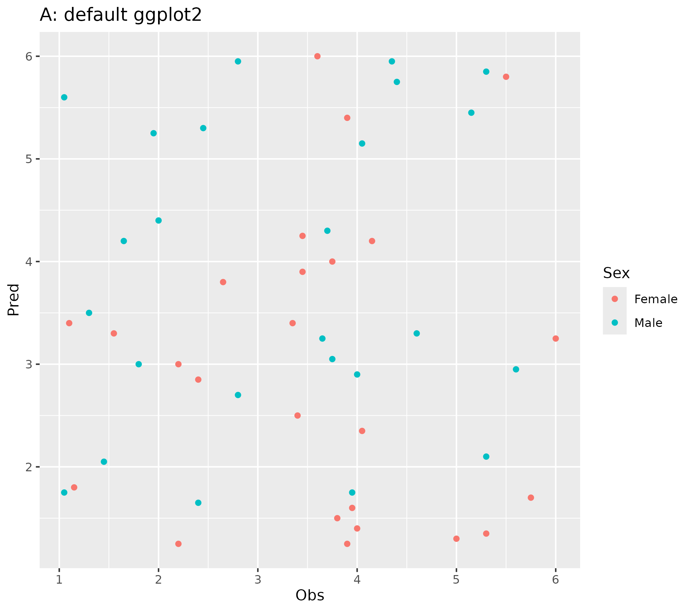
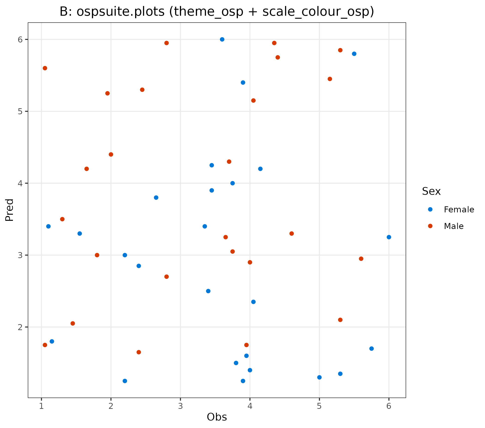
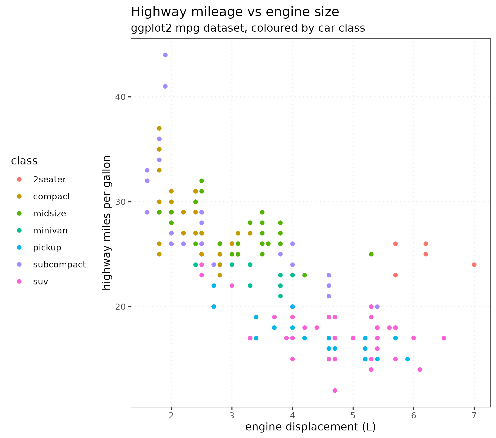
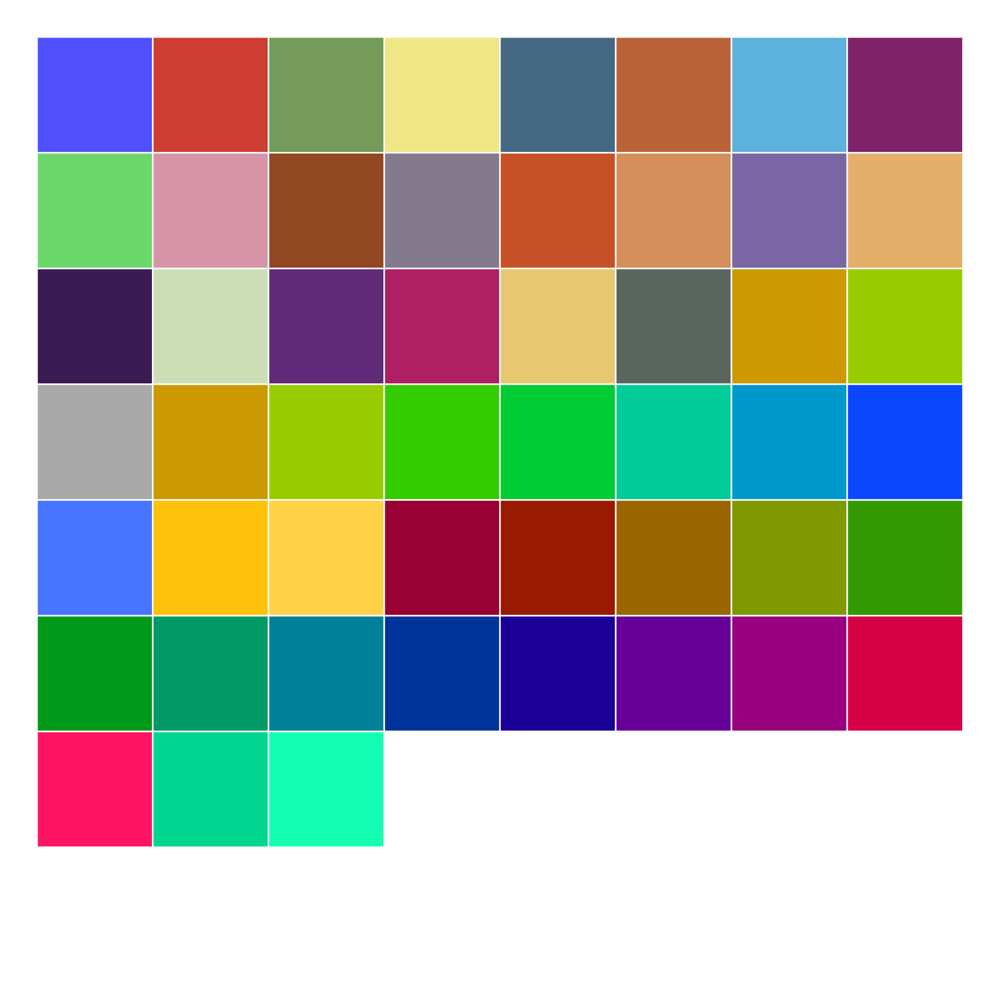
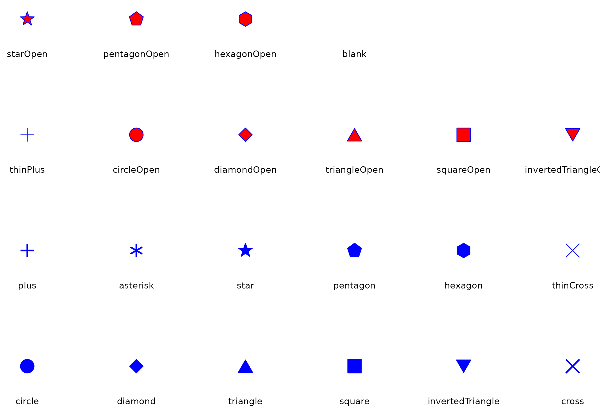
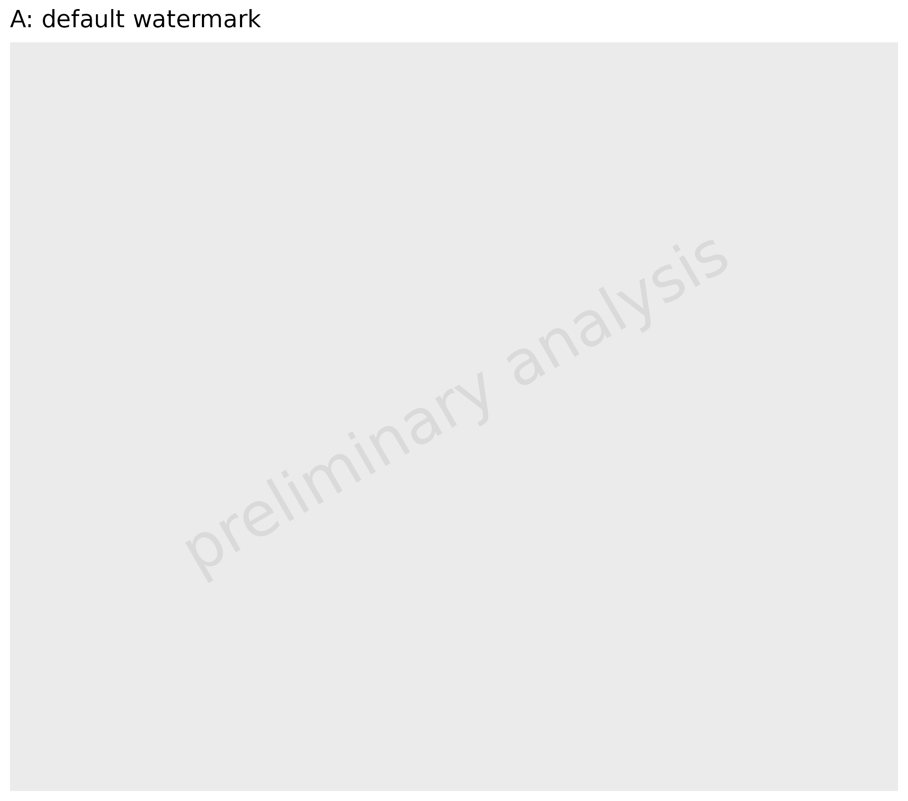
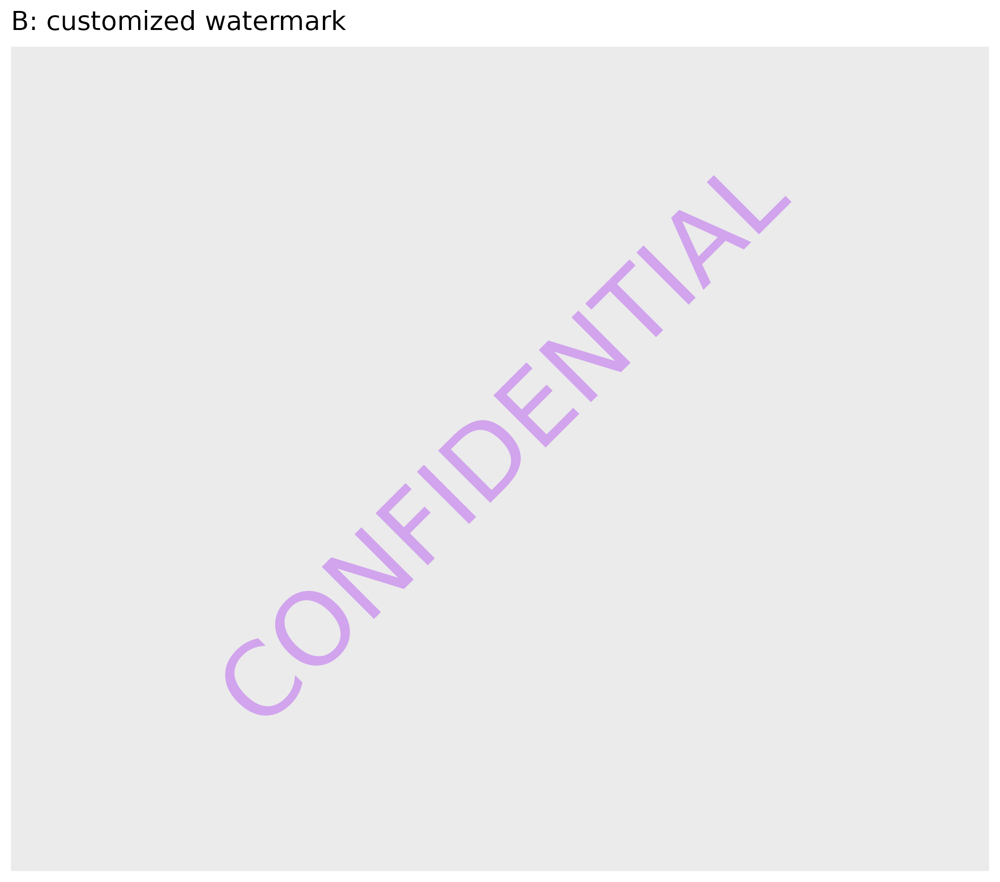
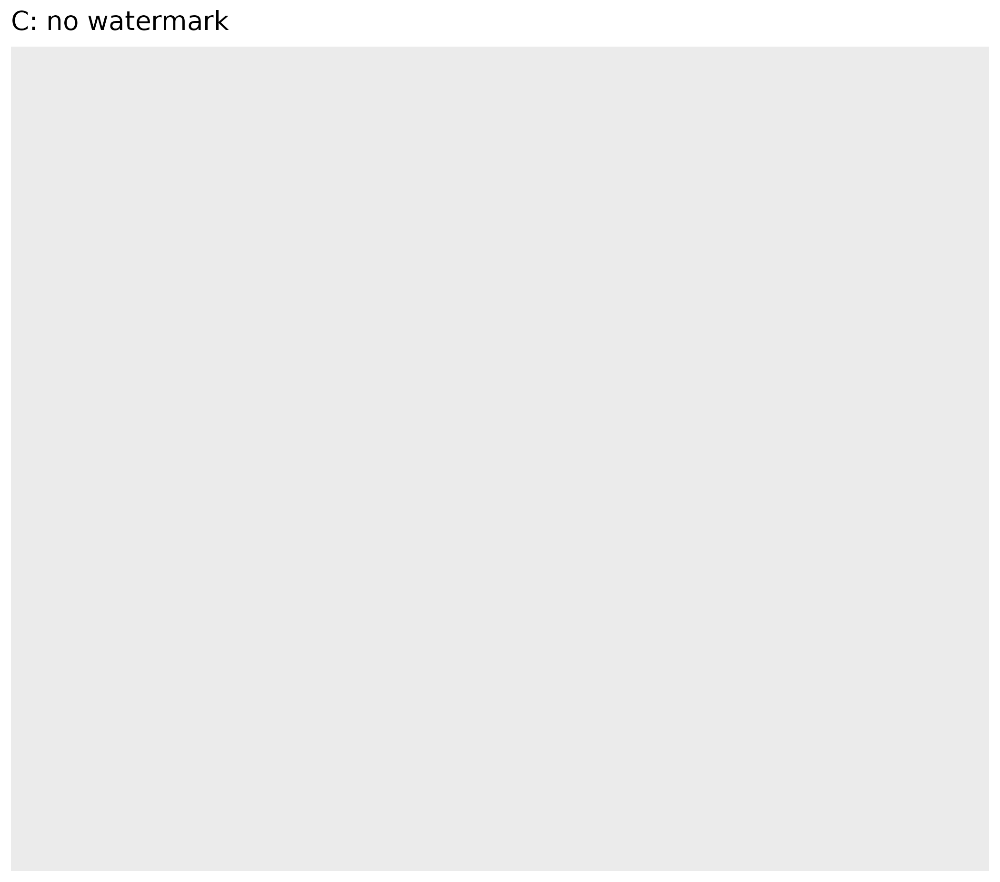

Overview
ospsuite-plots.Rmd1. Introduction
The main purpose of the ospsuite.plots library is to
provide standardized plots typically used in the context of PBPK
modeling. The library supports plot generation for the packages
OSPSuiteR and OSPSuite.ReportingEngine.
The library is based on ggplot2 functionality and also
utilizes the ggh4x package.
2. Styling ospsuite.plots Plots
Every ospsuite.plots plot function already produces a
fully styled plot, so you do not need to configure anything to get the
ospsuite.plots look. When you do want to change
something, there are two distinct mechanisms, and it helps to know which
one to reach for:
-
OSP theme and custom scales (Section 2.1) shape the frame
and the mapped aesthetics of a single plot, by adding them like any
other
ggplot2component:theme_osp()for the theme (background, grid, legend, titles), andscale_colour_osp()/scale_fill_osp()/scale_shape_osp()for the discreteospsuite.plotscolor and shape palettes. They return ordinaryggplot2objects and never change global state, so they also let you bring theospsuite.plotslook to a plot you built yourself with plainggplot2. -
Session options (Section
2.2) set defaults read at plot-function call time: the geom
aesthetics of the drawn marks (fill alpha, line width, error-bar caps,
…), statistical behaviour (percentiles, histogram bins), and side
features (watermark, export format). Set them once and every later
ospsuite.plotsplot in the session picks them up; or pass the matchinggeom*Attributesargument to override just one call.
In short: reach for a constructor to restyle the
look of one plot (especially a hand-built ggplot2
plot); set an option to change the default marks or
behaviour across your analysis.
Examples within this vignette are plotted using the following test data:
testData <- exampleDataCovariates |>
dplyr::filter(SetID == "DataSet1") |>
dplyr::select(c("ID", "Age", "Obs", "Pred", "Sex"))2.1 OSP Theme and Custom Scales
The OSP theme and scales are added to a plot like any other
ggplot2 component and return ordinary ggplot2
objects, so they do not change global state. The
ospsuite.plots plot functions apply them internally; you
add them yourself only when styling a plain ggplot2
plot.
The same plot with the default ggplot2 layout (A) and
with the ospsuite.plots constructors applied (B):
basePlot <- ggplot(testData, aes(x = Obs, y = Pred, color = Sex)) +
geom_point()
# A: default ggplot2 layout
basePlot + labs(title = "A: default ggplot2")
# B: ospsuite.plots constructors added to the same plot
basePlot +
theme_osp() +
scale_colour_osp() +
labs(title = "B: ospsuite.plots (theme_osp + scale_colour_osp)")

2.1.1 Theme: theme_osp()
theme_osp() is a regular ggplot2 theme,
built on theme_bw(), that styles the frame
of a plot (panel background, grid, legend placement, title and
subtitle); it controls everything that is not the plotted data. Because
it is an ordinary theme object, it behaves exactly like the built-in
theme_*() themes: use it as the starting point and layer
your own choices on top with a theme() call (the later
theme() wins for the elements it sets). It also accepts the
usual theme_bw() arguments such as
base_size.
# start from the OSP theme, then apply custom choices on top (these win)
ggplot(mpg, aes(x = displ, y = hwy, color = class)) +
geom_point() +
labs(
title = "Highway mileage vs engine size",
subtitle = "ggplot2 mpg dataset, coloured by car class",
x = "engine displacement (L)",
y = "highway miles per gallon"
) +
theme_osp() +
theme(
legend.position = "left",
plot.title = element_text(hjust = 0),
plot.subtitle = element_text(hjust = 0),
panel.grid.major = element_line(linetype = "dotted")
)
2.1.2 Color: scale_colour_osp() and
scale_fill_osp()
scale_colour_osp() and scale_fill_osp()
apply the ospsuite.plots discrete color palette to the
mapped colour/fill aesthetics
(colorMaps$default for up to 6 groups,
colorMaps$ospDefault beyond; see ?colorMaps).
As in ggplot2, scale_color_osp() is an alias
of scale_colour_osp(). As ordinary scales, they are
overridden by any other scale_colour_*() /
scale_fill_*() you add.
The palette used beyond six groups
(colorMaps$ospDefault):

2.1.3 Shape: scale_shape_osp()
All point layers produced by ospsuite.plots use
geom_point_osp(), which draws from the OSP shape palette
defined in ospShapeNames. When you build your own plots and
want them to combine consistently with ospsuite.plots
outputs, prefer geom_point_osp() over the raw
ggplot2::geom_point() (raw geom_point() keeps
using ggplot2’s native pch shapes and is unaffected). Shape ordering is
controlled per plot:
-
scale_shape_osp()assigns shapes automatically fromospShapeNames. -
scale_shape_osp_manual(values = c(level1 = "circle", level2 = "diamond", ...))sets an explicit mapping. -
scale_shape_osp_identity()is the right choice when the data already contains shape names.
The available shapes:

2.1.4 Applying the constructors globally (deprecated)
To style many unrelated (non-ospsuite.plots) plots in a
session at once, setDefaultTheme() sets
theme_osp() as the global ggplot2 theme via
theme_set(), and setDefaults() additionally
mutates the global geom defaults and discrete color options. Both are
deprecated: ospsuite.plots plots no longer
need them, and the per-plot theme_osp() and scales above
are the recommended path. They still work and return the previous
settings so you can restore them with resetDefaultTheme() /
resetDefaults().
# Deprecated: style every plot in the session, including non-ospsuite.plots ones
oldTheme <- ospsuite.plots::setDefaultTheme()
# Restore the previous global theme
ospsuite.plots::resetDefaultTheme(oldTheme)2.2 Session Options
Session options are read by the ospsuite.plots plot
functions at call time (falling back to the package defaults when an
option is unset), so setting one changes the default for every later
plot in the session. Set them with
options(ospsuite.plots.<key> = value) and read them
with getOption("ospsuite.plots.<key>"); the examples
below use this form. The helpers
setOspsuite.plots.option(optionKey, value) and
getOspsuite.plots.option(optionKey) do the same using the
keys from the OptionKeys enumeration, and
getDefaultOptions() returns the full default list.
# inspect the default options
ospsuite.plots::getDefaultOptions()The options fall into three groups:
- Geom default aesthetics (Section 2.2.1): how the drawn marks look (fill alpha, line width, error-bar caps, bar outline, …).
- Statistical and plotting behaviour (Section 2.2.2): what is computed or drawn, not how it looks (percentiles, histogram bins, LLOQ handling).
- Side features (Section 2.2.3): the watermark and the export format.
2.2.1 Geom Default Aesthetics
All plot functions have geom*Attributes input variables
that are passed on to the corresponding ggplot2 layer;
their defaults are session options. This is how the
ospsuite.plots look of the drawn marks (such as the fill
alpha of ribbons and boxes, the line width, or the error-bar cap width)
is applied per layer, rather than by mutating the global
ggplot2 geom defaults. Override one for a single plot by
passing the argument
(e.g. plotRangeDistribution(..., geomRibbonAttributes = list(alpha = 0.3))),
or for the session by setting the option.
| functions | Line | Ribbon | Point | Errorbar | LLOQ | Hist | Boxplot | ComparisonLine | GuestLine |
|---|---|---|---|---|---|---|---|---|---|
| plotTimeProfile() | geomLineAttributes | geomRibbonAttributes | geomPointAttributes | geomErrorbarAttributes | geomLLOQAttributes | ||||
| plotResVsCov() | geomPointAttributes | geomErrorbarAttributes | geomLLOQAttributes | geomComparisonLineAttributes | geomGuestLineAttributes | ||||
| plotRatioVsCov() | geomPointAttributes | geomErrorbarAttributes | geomLLOQAttributes | geomComparisonLineAttributes | geomGuestLineAttributes | ||||
| plotPredVsObs() | geomPointAttributes | geomErrorbarAttributes | geomLLOQAttributes | geomComparisonLineAttributes | geomGuestLineAttributes | ||||
| plotHistogram() | geomHistAttributes | ||||||||
| plotBoxWhisker() | geomBoxplotAttributes, geomPointAttributes |
The default fill alpha and line width are shared across these
attributes through the alpha option (default
0.5); setting it adjusts the transparency of every filled
mark:
# Make all filled marks more transparent for the session
options(ospsuite.plots.alpha = 0.3)2.2.2 Statistical and Plotting Behaviour
These options change what a plot computes or draws, not how the marks look.
-
percentiles: five quantiles (lower whisker, lower box, median, upper box, upper whisker) used byplotBoxWhisker()(defaultc(0.05, 0.25, 0.5, 0.75, 0.95)). -
defaultPercentiles: three quantiles used byplotRangeDistribution()(defaultc(0.05, 0.5, 0.95)). -
geomHistAttributes$bins: the default number of histogram bins. -
lloqAlphaVector/lloqLineType: the transparency of points below the LLOQ and the line type of the LLOQ line.
2.2.3 Side Features: Watermark and Export
Watermark
All plots in this package are created with
ggplotWithWatermark() instead of ggplot(),
which adds a watermark on print. The watermark is enabled by
default; setting the option to NULL is treated the
same as the default, so it still appears. You only need these options to
customize or remove it.
# Disable watermarks globally (e.g. in your .Rprofile, editable via usethis::edit_r_profile())
options(ospsuite.plots.watermarkEnabled = FALSE)Attention! If you combine plots, e.g. with
cowplot::plot_grid, the default print function without
watermark is called. In that case add the watermark with
addWatermark(plotObject) before printing.
The watermark is controlled by three options:
-
watermarkEnabled(defaultTRUE): switch the watermark on or off. -
watermarkLabel(default"preliminary analysis"): the text. -
watermarkFormat(defaultlist(x = 0.5, y = 0.5, color = "lightgrey", angle = 30, fontsize = 12, alpha = 0.7)): the appearance.
# A: default watermark
ggplotWithWatermark() + labs(title = "A: default watermark")
# B: customized watermark
options(ospsuite.plots.watermarkLabel = "CONFIDENTIAL")
options(
ospsuite.plots.watermarkFormat = list(
x = 0.5,
y = 0.5,
color = "purple",
angle = 45,
fontsize = 18,
alpha = 0.35
)
)
ggplotWithWatermark() + labs(title = "B: customized watermark")
# C: no watermark
options(ospsuite.plots.watermarkEnabled = FALSE)
ggplotWithWatermark() + labs(title = "C: no watermark")
Export
exportPlot() (see Section 5)
uses these options as defaults, passed on to
ggplot2::ggsave():
-
exportWidth: width of the exported file -
exportUnits: units for width and height -
exportDevice: device for plot export -
exportDpi: plot resolution
3. Plot Functions
All plot functions listed below call internally the function
initializePlot(). This function constructs labels from the
metadata and adds a watermark layer. It can also be used to create a
customized ggplot.
4. Additional Aesthetics
This package provides some additional aesthetics.
For more details, see the examples within the vignettes for the respective functions.
-
groupby: Shortcut to use different aesthetics to group. All functions where this aesthetic is used have also a variablegroupAesthetics. The mappinggroupbyis copied to all aesthetics listed within this variable and to the aestheticgroup. -
lloq: Mapped to a column with values indicating the lower limit of quantification, adds horizontal (or vertical) lines to the plot. All observed values below the “lloq” are plotted with a lighter alpha. As values are compared row by row, it is possible to have more than one LLOQ. -
error: Mapped to a column with additive error (e.g., standard deviation); error bars are plotted. This is a shortcut to mapyminandymaxdirectly (ymin = y - errorandymax = y + error). Additionally, ifyScaleis set,yminvalues below 0 are set toy. -
error_relative: Mapped to a column with relative error (e.g., geometric standard deviation); error bars are plotted. This is a shortcut to mapyminandymaxdirectly (ymin = y / error_relativeandymax = y * error_relative). -
y2axis: Creates a plot with 2 y axes. It is used to map to a column with a logical value. Values where this column has a TRUE entry will be displayed with a secondary axis. -
mdv: Mapped to a logical column. Rows where this column has entries set to TRUE are not plotted (MDV = missing data value, taken from NONMEM notation). -
observed/predicted: For the functionplotPredVsObs(),observedis mapped toxandpredictedis mapped toy.
Residuals and ratios must be pre-calculated before passing them to
the plotting functions. If you are using the {ospsuite}
package, use ospsuite::addResidualColumn() to add a
residual column to your data.
See
vignette("Goodness of Fit", package = "ospsuite.plots") for
examples.
| functions | groupby |
lloq |
error |
error_relative |
y2axis |
mdv |
observed / predicted
|
|---|---|---|---|---|---|---|---|
| plotTimeProfile() | X | X | X | X | X | X | |
| plotHistogram() | X | X | |||||
| plotPredVsObs() | X | X | X | X | X | X | |
| plotResVsCov() | X | X | X | X | |||
| plotRatioVsCov() | X | X | X | X | |||
| plotQQ() | X | X | |||||
| plotBoxWhisker() | X |
5. Plot Export
This section demonstrates how to use the exportPlot
function to save ggplot objects to files, adjusting the
width and height of the exported plots as necessary. This function is
part of the ospsuite.plots package and simplifies the
process of exporting plots for various purposes, such as publication or
presentation.
5.1 Basic Usage
To export a plot, you need a ggplot object. Here’s a basic example:
Create a simple ggplot object:
plotObject <- ospsuite.plots::plotHistogram(
data = testData,
mapping = aes(x = Age)
)Exporting the Plot: Using the exportPlot function, you
can easily save this plot to a file:
Replace "path/to/save" with the actual directory path
where you want to save the plot, and adjust the width and height
parameters as needed.
exportPlot(
plotObject = plotObject,
filepath = "path/to/save",
filename = "myplot",
width = 10,
height = 8
)5.2 Advanced Usage
Adjusting Plot Dimensions Based on Content
The exportPlot function can automatically adjust the
plot dimensions based on its content, such as the presence of a legend
or the aspect ratio.
Assuming plotObject is your ggplot object:
exportPlot(
plotObject = plotObject,
filepath = "path/to/save",
filename = "adjusted_plot.png"
)In this case, you don’t need to specify the width and height
explicitly; the function calculates them for you. The default width
value saved in the ospsuite.plots option
exportWidth is used. If an aspect ratio is defined in the
theme of the plot, height will be adjusted accordingly; otherwise, the
function exports square figures.